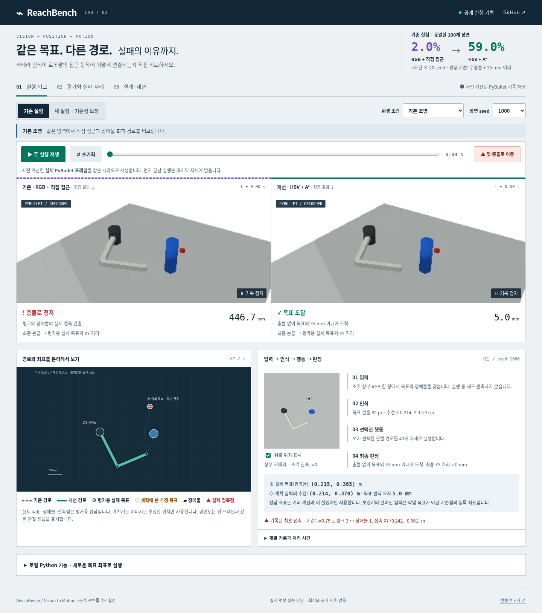

ReachBench · 실행과 실패를 확인하는 실험 보고서
공개 데모 · GitHub · 소스·데이터 ZIP
카메라 인식 → 위치 추정 → 경로 계획 → 목표 접근 → 평가를 연결합니다. 초기 구현·실험 실행·검증·문서화에 Codex를 사용했습니다.

기준점 보정: 실제 평가 결과
2026-11-17 KST · CPU 기구학 시뮬레이션. 개발 42회와 분리한 최종 280회. 정상 기준점의 100개 paired 장면과 스트레스 40개 paired 장면을 구분한다. 기존 400회 평가와 seed·조건이 다르므로 기존 59%와 새 100%를 직접 개선 폭으로 비교하지 않는다.
정상 기준점: 편향별 동일 20개 장면
| X 편향 | 성공 기존→보정 | 충돌 기존→보정 | 목표 인식 평균 오차 mm | 최종 거리 평균 mm | 처리 중앙값 ms |
|---|---|---|---|---|---|
| +0 mm | 20/20 → 20/20 | 0 → 0 | 5.99 → 2.29 | 5.99 → 2.29 | 40.70 → 40.81 |
| +20 mm | 20/20 → 20/20 | 0 → 0 | 20.64 → 2.29 | 20.64 → 2.29 | 39.79 → 42.09 |
| +40 mm | 0/20 → 20/20 | 2 → 0 | 40.20 → 2.29 | 56.52 → 2.29 | 40.86 → 42.00 |
| +65 mm | 0/20 → 20/20 | 18 → 0 | 65.03 → 2.29 | 317.25 → 2.29 | 35.62 → 41.29 |
| +100 mm | 0/20 → 20/20 | 19 → 0 | 99.94 → 2.29 | 365.59 → 2.29 | 37.49 → 41.13 |
정상 기준점 전체 성공 40/100 → 100/100, 충돌 39 → 0. 평균 인식 오차 46.36 → 2.29 mm. 처리 중앙값 38.98 → 41.32 ms, P95 351.19 → 406.43 ms. 기준점 처리 자체 중앙값 0.52 ms.
성공률 Wilson 95%: 기존 30.9%–49.8%, 보정 96.3%–100.0%. 편향 간 같은 seed를 재사용한 상관을 보정하지 않은 근사 구간이다. 높은 P95와 공유 CPU의 부하를 감안할 때 실시간 제어 성능을 주장할 수 없다.
기준점 가정이 깨질 때
| 조건 | 성공 기존→보정 | 충돌 기존→보정 | 보정 후 인식 오차 | 보정 후 최종 거리 | 보정 후 실패 전수 |
|---|---|---|---|---|---|
| 기준점 2개 | 0/20 → 0/20 | 18 → 0 | 65.03 mm | 676.84 mm | calibration_unavailable 20회 |
| 기준점 전체 +50 mm 오배치 | 0/20 → 0/20 | 18 → 0 | 50.84 mm | 78.24 mm | position_error 19회, no_path 1회 |
기준점 부족에서는 전부 이동을 보류해 충돌을 피했지만 과제는 실패했다. 표시되는 최종 거리는 움직이지 않은 시작 손끝에서 목표까지다. 목표 추정은 남아 있어도 계획기에 전달하지 않는다. 기준점 오배치에서는 내부 잔차가 작아도 절대 좌표가 틀리므로 성공하지 못했다. 잔차 검증만으로 공동 배치 오류를 검출할 수 없다는 반례다.
정상/스트레스를 모두 합치면 두 방법 성공은 40/140과 100/140이다. UI 상단 40%→100%는 정상 기준점 100개 장면만의 비율이며 스트레스를 제외했다는 사실을 표시한다. 성공한 사례를 선별한 것이 아니라 사전에 정의한 조건별 분모를 사용했다.
추적 가능한 성공·실패 사례
- standard-0-3000-uncorrected: reached, 목표 인식 6.02 mm, 최종 거리 6.02 mm.
- standard-40-3011-uncorrected: collision, 목표 인식 39.54 mm, 최종 거리 165.20 mm.
- standard-40-3000-uncorrected: position_error, 목표 인식 40.58 mm, 최종 거리 40.58 mm.
- markers_missing-65-3000-reference: calibration_unavailable, 목표 인식 65.41 mm, 최종 거리 614.50 mm.
- board_shift-65-3000-reference: position_error, 목표 인식 50.45 mm, 최종 거리 50.45 mm.
- board_shift-65-3012-reference: no_path, 목표 인식 51.24 mm, 최종 거리 599.26 mm.
검증과 공개 범위
- Python 테스트 21개 통과: 원 엔진/기하/API 11개와 보정·기준점 실패·held-out 재실행·집계·영상 정합성 검증.
- 최종 280회 전수 재실행: RGB 해시·검출·보정값·관절 trace·판정·최종/인식 오차 완전 일치. 타이밍은 비교하지 않음. 검증 기록.
- 기존 기준/개선 200회 재실행이 원본과 일치. 총 480개 실행의 프레임 trace SHA-256·t·q, 페이지 이미지 해시/크기, 접촉 샘플 검사 통과. 기존 400회 원본 데이터 보존.
- Chromium 1440×1000 및 모바일 390×844: 재생·정지·초기화·시간 탐색, 프레임/2D 동일 index, 가림·보정·기준점 결손·오배치, 실패 링크, seed 변경, 결과 표, 탭, 오버레이 검사 통과. 브라우저 검사, DOM 검사.
- 실제 캡처: 데스크톱, 모바일, 보정 비교.
- 외부 면접관/사용자 대상 사용성 테스트, 실제 iOS Safari/Android 기기, 전체 키보드·스크린리더 감사는 미실시. 모바일은 Chromium viewport/touch 에뮬레이션이다.
- 관리 preview relay는 준비 시간 초과로 실패했다. 로컬 정적 파일을 Chromium 요청에 연결해 실제 JS·레이아웃을 검사했고 공개 배포에는 별도 실제 HTTP 검증을 사용한다. DOM 검사와 브라우저 검사를 구분한다.


공개 데모는 사전 계산된 기록 재생이며 Python을 브라우저 서버에서 실행하지 않는다. 로컬 Python 서버에서 새 목표 좌표를 계산할 수 있다. 새 보정 실험을 임의 조건으로 실행하려면 CLI를 사용한다. 모든 결과는 시뮬레이션이며 실물 로봇·학습 정책·파지·ROS 2 성능이 아니다.
보완 조사와 설계 결정
조사일: 2026-11-17 KST. 공고 원문, 현재 GitHub 코드·기록, 실제 공개 데모를 확인했다. 첫 버전의 공고·회사 조사도 보존한다. 참조 저장소는 README를 직접 읽었으며 그 프로젝트들의 실험을 재현하거나 성능을 검증하지 않았다.
현재 프로젝트에서 확인한 것
- 기존 엔진
sim.py는 두 회전 관절(링크 0.55/0.45 m)의 평면 접근 작업이다.resetJointState로 자세를 설정하고 Bullet 충돌 쿼리를 실행한다. 모터 동역학·토크 제어·파지가 아니다. - 입력은 TinyRenderer로 생성한 320×320 RGB다. 고정 카메라·알려진 물체 높이를 사용하는 RGB/HSV 분할 → 평면 역투영 → IK/A* 구조다. 학습된 모델은 없다.
- 원 데이터 400회는 seed 1000–1019 × 5조건 × 4방법이다. 원 데이터의 SHA-256과 엔진을 변경하지 않았다.
- 기존 중앙 화면은 관절 좌표를 SVG로 그린 재구성이었다. 기존 스냅샷만으로 전체 동작을 재생할 수 없었다. 따라서 기준/개선 200회를 재실행하고 원본의 모든 관절 샘플·검출·판정·최종 거리가 같은지 대조한 뒤 실제 PyBullet 사선 프레임을 생성했다.
- 목표 가림은 RGB 입력에만 적용한 25×25 회색 패치다. 물리적 3D 가림 물체가 아니다. 렌더링용 사선 카메라를 인식에 쓰거나 재관측에 쓰지 않는다.
- 원래
endpoint_error_mm는 마지막 손끝 XY와 실제 목표 XY의 거리다. 가림으로 이동하지 않아도 시작 손끝에서 목표까지의 거리가 표시된다. 그때perception_error_mm는 null이고 이동거리는 0이다.
공고와 연결되는 범위
공고의 인식·판단·행동, 시뮬레이션과 가상 데이터, 카메라 기반 위치 인식, 공간 정보와 제어의 연계, 데이터 전처리·정제·평가에 연결된다. 이번 추가는 좌표 보정 실패가 경로와 충돌로 전파되는 과정을 분리하고 같은 입력으로 개선을 검증한다. 회사가 공개한 HABILIS의 관측·실행·기록·개선 흐름과는 문제 구조를 공유한다. 회사 시스템, VLA, 2족 보행/WBC, 실제 환경 실증을 구현한 것은 아니다. 데이터는 생성·저장·정합성 확인까지 수행했고 학습·데이터 증강 효과 실험은 하지 않았다.
참고 사례에서 취한 원칙
| 확인한 원문 | 확인한 전달 방식 | ReachBench 적용 |
|---|---|---|
| DiyaJabin/vision-based-robotic-arm | KUKA/PyBullet 실행 이미지·영상과 인식 방식을 병치. README는 소수 smoke 실패와 파지 제약을 별도 기록 | 실제 실행 화면을 앞에 배치하되 기구학·학습 없음·파지 없음 명시 |
| GKoutilya/robotic-arm-simulation | RGB-D/segmentation, IK/RRT, 실행·접촉과 선택적 ROS 2 기능 구분 | 센서 추정과 평가 정답을 분리하고 접촉 쿼리의 시점·좌표 표시 |
| RoboEval | 과제·조건·방법별 실행과 성공/실패 탐색, 진단 지표 | 실패 유형에서 실제 해당 seed와 기록으로 이동 |
| Foxglove Visualization | 영상·3D·시계열의 공통 시간 탐색, 기록 비교 | 재생/정지/탐색을 상단에 두고 프레임과 SVG가 같은 trace index 사용 |
| Find_the_viewpoint | 관찰 위치를 바꿔 얻는 정보와 촬영/이동 과정 | 재관측에는 새로운 카메라 모델·관찰 전략과 비용 평가가 필요함을 확인 |
외부 코드·이미지·영상·UI 자산은 복사하지 않았다. 첫 사례는 MIT, 나머지 두 참고 저장소의 라이선스는 이번 조회에서 확인하지 못해 코드를 사용하지 않았다. 도구와 회사의 마케팅·README 주장을 독립 검증 결과처럼 인용하지 않는다.
보정 오차를 실험 대상으로 선택한 이유
| 후보 | 현재 구현에서 필요한 변화 | 검증 가능성 | 선택 |
|---|---|---|---|
| 가림 후 관찰 시점 변경 | 고정 카메라 외 관측 모델, 실제 가림 기하, 재관측 정책·비용, 새 센서-좌표 변환 필요 | 가능하지만 기존 이미지 패치만 다른 뷰에서 제거하면 인위적으로 쉬운 과제가 됨 | 이번 보완에서는 가림 설명만 개선 |
| 기준점으로 위치 편향 추정 | 기존 RGB에 위치가 알려진 기준점 추가, 관측값으로 공통 XY 편향 추정 | 기존 계획기를 그대로 유지하고 편향별 paired 실험 가능 | 채택 |
추가 카메라는 동작을 보여주는 관찰용으로만 사용한다. 보정기는 실제 RGB에서 찾은 별도의 기준점으로 추정하며 목표 정답이나 실험 주입값을 직접 빼지 않는다. 실제 배치가 알려진 기준점이 있다는 강한 가정과 그 가정이 깨지는 실패를 함께 실험한다.
파지·ROS 2 적용 판단
환경에는 ros2 명령과 rclpy가 없었다. 현재 로봇은 수직/그리퍼 자유도가 없는 평면 두 관절이고 상태 직접 설정 방식이다. 검증 가능한 파지·놓기에는 엔드이펙터, 접촉 동역학과 모터 제어부터 새로 구성해야 하므로 이번 범위에 추가하지 않았다. 실행하지 않은 기능은 데모에 구현된 것처럼 표시하지 않는다.
기준점 보정 실험과 실행 프레임
가설과 데이터 흐름
상부 RGB → HSV 목표/장애물 분할 → 편향된 픽셀-평면 변환 → (선택) 기준점 보정 → 동일 IK/A* → 기구학 자세 실행·충돌 쿼리 → 실제 목표와 비교.
작업 목표·장애물의 실제 좌표는 장면 생성과 평가·충돌 쿼리·시각화에만 쓰인다. plan은 추정 좌표와 알려진 로봇 기구학을 받는다. 기준점의 측량된 등록 좌표는 별도의 보정 입력이며 작업 목표 정답과 다르다.
녹색 원형 기준점 네 개의 등록 XY(m)는 (-0.82,-0.65), (0.82,-0.65), (-0.82,0.65), (0.82,0.65). 기준점 높이는 목표 높이 0.022 m와 같다. 고정 상부 카메라의 서로 분리된 네 사분면으로 ID를 구분한다. RGB의 HSV H42–82, S≥110, V≥30, 3×3 열기와 면적≥7 px로 찾는다. ArUco나 일반적인 6D 카메라 캘리브레이션을 구현한 것은 아니다.
각 기준점 i의 d_i = 관측 역투영 좌표 − 등록 좌표. 공통 편향 b = 좌표별 median(d_i). 적어도 3개를 검출하고 max ||d_i − b|| ≤ 12 mm일 때 목표와 장애물 추정 XY에서 b를 뺀다. 반지름은 변경하지 않는다. 개수/일관성 검사 실패 시 경로 계획과 이동을 보류한다. 실험에서 심은 +65 mm를 답으로 빼지 않는다. 같은 잘못된 변환을 통과한 기준점의 영상 관측값으로 계산한다.
ReferenceWorld에 기준점을 렌더링하되 기본 과제 장면은 scene(seed)다. 두 방법은 같은 RGB 해시, 시작 관절, HSV 검출, A* 설정을 공유한다. 비교는 HSV + A* 대 기준점 보정 + HSV + A*이며 기존 RGB 직접 접근과의 비교와 구분한다.
개발과 최종 평가
- 개발: seed 2000–2002, 7조건 × 3seed × 2방법 = 42회. 최초 구현·임계값 동작 확인. 기록은
docs/v2/development/. 학습/수치 최적화는 없었다. - 최종: seed 3000–3019, 7조건 × 20seed × 2방법 = 280회. 설정과 소스 해시를 실행 시작 전에 config.json에 저장. 최종 결과를 본 뒤 보정 코드/임계값을 변경하지 않았다.
- 정상 기준점: X 편향 0/+20/+40/+65/+100 mm 각각 20 paired 장면. 물체/장애물은 같은 seed에서 동일하며 다섯 편향 간 seed를 재사용한다.
- 스트레스: +65 mm에서 기준점 두 개만 렌더링, 또는 모든 기준점을 실제로 +50 mm 이동하되 등록 좌표 유지. 각 20 paired 장면. 정상 조건과 별도 집계.
- 두 방법의 성공 기준 동일: 경로 존재, 실행 중 접촉 없음, 최종 손끝-실제 목표 XY 거리 ≤35 mm. 미이동도 실패로 분모에 포함.
- Linux x86_64, CPython 3.11.18, NumPy 2.2.6/OpenCV 4.11.0.86/PyBullet 3.2.7, CPU DIRECT/TinyRenderer. GPU·학습·외부 모델·외부 데이터셋 없음.
지표와 기록 해석
- 인식 오차: 검출된 목표 추정 XY와 실제 목표 XY의 거리. 보정 미실행이면 원 추정값의 오차이며 이동했다는 뜻이 아니다.
- 최종 거리: 마지막 실제 실행 샘플의 손끝과 실제 목표의 XY 거리. 이동 보류에서는 시작 손끝→목표 거리다. 이를 인식 오차나 추종 오차라고 부르지 않는다.
- 충돌: 각 자세에서 Bullet 실제 형상의 접촉 여부.
getClosestPoints(distance=0)의 링크·장애물·실제 접촉점·signed distance를 기록한다. 이산 자세 사이 연속 충돌이나 모터 안정성을 보장하지 않는다. - 처리 시간: RGB 분할 + 기준점 추정/보정 + 계획의 벽시계 합. 입력 렌더링, 프레임 생성, 디스크 쓰기를 제외. 명목 궤적 시간(샘플당 0.05 s)이나 실제 로봇 동작 시간이 아니다. 측정은 공유 CPU에서 기존 기록 프레임 생성과 일부 겹쳐 전용 성능 벤치마크가 아니다.
- 평균 최종 거리는 미이동과 충돌 사례까지 포함한다. 인식 평균은 검출된 경우만 집계한다. 95% Wilson 구간은 이항 근사다. 같은 seed를 편향별로 재사용한 상관을 보정하지 않으므로 모집단 일반화 근거로 삼지 않는다.
실제 프레임의 출처와 동기화
기존 400회 결과 중 데모의 기준/개선 200회를 그대로 재실행했다. 모든 trace·detected·success·reason·endpoint_error_mm이 원본과 정확히 일치해야 기록을 허용한다. 다른 두 절제 방법의 200회는 결과를 보존하되 새 동작 프레임을 생성하지 않았다.
그 뒤 동일 관절 상태를 PyBullet에서 다시 실행하고 사선 카메라(320×240)로 렌더링했다. 새 실험 280회에도 동일 방식으로 프레임을 저장했다. 이것은 원래 녹화해 둔 영상이 아니라 원 기록과 일치하는 재실행의 렌더링이다. 원 실행과 재실행의 처리 시간을 섞지 않는다.
기본 프레임 간격 0.10 s(기록 샘플 2개마다), 마지막 샘플과 모든 충돌 샘플은 추가 포함한다. 각 WebP 타일은 정확한 trace index·t·q와 해시를 갖는다. 한 페이지 최대 40타일, 손실 압축 quality82. UI 시간 탐색 시 직전 실제 프레임을 표시하고 2D도 그 프레임의 같은 관절 샘플을 사용한다. 프레임 사이 가상 이미지/관절 보간을 만들지 않는다. 두 실행은 공통 시계를 사용하지만 먼저 끝난 실행은 멈추며 각자의 정확한 샘플 시각을 표시한다.
가림 장면의 사선 화면은 인식용 RGB와 다른 카메라이므로 목표가 보일 수 있다. 화면·설명에 이를 명시한다. 충돌 삼각형은 실제 접촉 샘플 시각에 도달한 후 표시하며 ‘첫 충돌로 이동’은 저장된 접촉 시각을 쓴다.
재현 명령 (공개 결과를 덮어쓰지 않음)
python -m pip install -r requirements-dev.txt
python -m pytest -q
python -m reachbench.calibration --start 2000 --count 3 --split development --out work/my-development
python -m reachbench.calibration --start 3000 --count 20 --split evaluation --record --out work/my-evaluation
PYTHONPATH=. python scripts/reproduce_v2.py
# 기존 프레임 전체를 다시 만들려면 복사본에서 실행
cp -R dist work/replay-copy
python -m reachbench.recording --root work/replay-copy
# 로컬 UI에서 새 좌표 계산
python -m reachbench.serve
# DOM 및 실제 브라우저 검사
npm ci
npm run test:ui
python -m pip install -r requirements-browser.txt
python -m playwright install chromium
python scripts/browser_qa.py
reproduce_v2.py는 최종 280회를 다시 실행하고 입력 RGB 해시·관절·검출·보정·판정·오차의 완전 일치를 검사한다. 타이밍은 비교하지 않는다. recording.py는 원본 JSON을 바꾸지 않는다. 브라우저 스크립트는 설치된 chromium을 우선 사용하고 없으면 Playwright Chromium을 쓴다. --url로 실제 배포 HTTP를 검사할 수도 있다.
남아 있는 실패와 한계
기준점 두 개에서는 전부 이동을 보류한다. 충돌을 피했지만 과제 성공은 0/20이다. 모든 기준점을 함께 잘못 배치하면 잔차가 작아 검증을 통과해도 절대 보정이 틀리다. 그 조건도 성공 0/20이다. 정확히 측량된 기준점은 현장에서도 공짜로 주어지는 정답이 아니다.
이 보정은 고정 카메라에서 공통 평행이동만 다룬다. 실제 외부 파라미터 회전, 스케일, 렌즈 왜곡, 높이 오차, 기준점 대응 오류, 이동 카메라, 비정형 색상은 검증하지 않았다. 보정 후 100/100은 명시된 정상 기준점과 합성 장면 분포에만 해당한다. 기존 가림 실패를 해결했다고 주장하지 않는다. 파지·ROS 2·실물 장비·학습 정책·동역학 제어는 없다.
출처와 라이선스
외부 데이터셋·사전학습 가중치·CAD/URDF·텍스처·사진·폰트 파일을 내려받아 사용하지 않았다. 모든 실험 장면은 코드의 기본 도형으로 생성했다. RGB 이미지·정답 좌표·궤적은 이 시뮬레이션의 합성 데이터다. 생성 코드·문서·생성 데이터는 이 저장소의 MIT 라이선스로 제공한다. 회사와 도구의 명칭·상표 권리는 각 소유자에게 있다.
| 의존성 | 고정 버전 | 라이선스 / 원문 | 사용 범위 |
|---|---|---|---|
| CPython | 실행 3.11.18 | PSF | 실행 환경 |
| PyBullet | 3.2.7 | zlib; 일부 번들 예제/서드파티 예외 | DIRECT, TinyRenderer, 도형·관절·충돌 쿼리. pybullet_data 자산 미사용 |
| OpenCV | 4.11.0.86 wheel | Apache-2.0; wheel의 서드파티 고지 별도 | HSV, morphology, contours, PNG 입출력 |
| NumPy | 2.2.6 | BSD-3-Clause | 수치 연산·난수 |
| pytest | 8.3.5 | MIT | Python 검증 |
| jsdom | 26.0.0 | MIT | 개발 시 DOM 동작 검사; 데모 런타임 미포함 |
라이브러리 바이너리·node_modules는 배포 소스 ZIP에 넣지 않았다. 설치 시 각 패키지의 라이선스와 배포 조건이 적용된다. 웹 런타임은 표준 HTML/CSS/JS이며 CDN·외부 글꼴·분석 추적기를 사용하지 않는다.
공고·회사·디자인 참고 페이지는 docs/RESEARCH.md에 링크하고 필요한 사실만 요약했다. 원문 페이지와 제품 이미지를 재배포하지 않았다.
v2 추가 사용 범위
- OpenCV의 WebP 인코더로 실제 TinyRenderer 프레임을 타일링했다. 브라우저 이미지는 생성형 모델의 영상이 아니다.
- Playwright 1.62.0 / Apache-2.0: 개발용 실제 Chromium 브라우저 검사. 공개 런타임·소스 ZIP에 바이너리를 넣지 않는다.
- Chromium / BSD 계열 및 서드파티 고지: 현재 환경에 설치된 headless 브라우저로 실제 화면 캡처.
- Python-Markdown 3.7 / BSD: 문서의 정적 HTML 생성, 런타임 의존성 아님.
- 사용자가 지정한 로봇팔·관측 프로젝트와 RoboEval/Foxglove는 보완 조사에 원문과 사용 범위를 기록했다. 코드·이미지·모델·영상 자산을 복제하지 않았다.
공고 조사와 방향 선정
조사일: 2026-11-17 (Asia/Seoul). 공개 웹 원문을 읽고 정리했다. 채용 상태·전형 일정은 지원 시 다시 확인할 것.
1. 공고에서 확인한 사실
원티드 381292의 주요업무:
- 로봇의 인식·판단·행동을 위한 Physical AI 기술 연구 및 구현
- 시뮬레이션 환경 구축 및 가상 데이터 기반 실험
- 카메라, 거리, 힘, 촉각 등 센서를 활용한 로봇 상태·위치 인식
- 공간·자세·동작 추정과 2족 보행 / Whole-body Control 등 제어 연계
- 로봇 학습 데이터 수집, 전처리, 정제, 증강 파이프라인
- 실제 환경 및 실증 프로젝트 적용과 성능 검증
자격요건: 관련 전공, 학사·석사 졸업 또는 졸업 예정, Python 또는 C/C++ 개발 경험, 로봇·AI·제어·컴퓨터 비전 중 한 분야 이상에 관심, 직접 학습·구현하는 태도. 정규직 전환형 3개월 인턴.
회사 공식 동일 직무에서도 동일한 업무와 자격요건을 확인했다. 공식 페이지의 추가 우대사항은 ROS/ROS2, PyTorch/OpenCV, 로봇 시뮬레이터·3D 환경, 센서 활용, 제어·컴퓨터 비전·강화학습·모방학습 프로젝트 경험이다. 이 추가 항목을 원티드 원문에 있었다고 인용하지 않는다. 지원자의 전공·졸업 상태는 제공되지 않아 자격 충족 여부를 판단하지 않았다.
2. 회사 기술과 연결
회사 공식 소개의 HABILIS 구성은 Agent(작업 계획·도구·로봇 연결), Brain(시연 데이터 기반 조작 스킬), Console(데이터·학습·추론·배포·운영), Data Foundry(현장·Human·Teleoperation 데이터)이다. About는 VLA 기반 로봇 파운데이션 모델, 모방·강화학습, 실시간 제어·추론, 실행 경험을 평가·학습으로 연결하는 흐름을 설명한다. 이는 회사가 공개적으로 설명한 기술 방향이며 독립적인 성능 검증이 아니다.
ReachBench는 카메라→공간 추정→경로→기록→실패 분석을 작은 단위로 재현한다. 회사의 모델이나 제품을 구현했다는 주장은 하지 않는다. 특히 본 프로젝트의 고정 색상 분할은 학습된 Physical AI/RFM/VLA가 아니다.
3. 대안 비교와 선정 근거
점수는 설계 판단(5점 만점)이며 실험 성능 수치가 아니다.
| 후보 | 공고 연관성 | CPU 실행 가능성 | 평가 명확성 | 데모 전달력 | 판단 |
|---|---|---|---|---|---|
| 휴머노이드 RL 보행 | 5 | 1 | 3 | 5 | 학습 예산·접촉 제어 검증 부족 |
| VLA 기반 파지 | 5 | 2 | 3 | 5 | 모델·데이터·GPU 의존과 파지 검증 비용 |
| 실내 시각 내비게이션 | 4 | 4 | 4 | 4 | SLAM·지도·위치추정까지 범위가 커짐 |
| 카메라 기반 2관절 접근 | 4 | 5 | 5 | 4 | 작은 작업에서 인식 오차가 동작 실패로 이어지는 관계를 분리 평가 가능 |
선정 문제: 고정 RGB 카메라로 붉은 작업물과 푸른 장애물을 인식하고, 2관절 평면 로봇팔 끝점을 작업물 XY 좌표의 35 mm 이내로 접근시킨다. 링크 전체가 장애물에 부딪히면 실패. 수직 도달·파지·이송은 범위 밖이다.
4. 기술 선택과 디자인 조사
- PyBullet: GUI/GPU 없이 DIRECT와 CPU TinyRenderer 사용. 도형 생성·관절 기록·독립 충돌 쿼리에 적합. 이번 구현은 상태를 직접 설정하므로 동역학 제어 시뮬레이션으로 소개하지 않는다.
- OpenCV HSV inRange: 밝기가 변할 때 고정 RGB 임계값과의 차이를 설명하고 비교할 수 있다. 범용 객체 인식 대체물이 아니다.
- Foxglove 3D panel: 이미지, 프레임, 경로, 시간 동기화·비교 기능을 조사했다. 이를 참고해 초기 이미지와 관절 기록 재생을 연결했다.
- Rerun: 다중 모달 데이터를 기록·변환·탐색하고 실패를 원본 데이터로 추적하는 구조를 참고했다.
- HABILIS Console: 로봇 제어·수집·학습·배포를 묶는 흐름을 확인했다. 로그인 이후 제품 UI를 직접 사용한 것은 아니다.
외부 제품의 이미지·브랜드·UI 코드·상용 자산을 가져오지 않았다. 짙은 공간 뷰, 중립색 작업 패널, 시간축, 입력·인식·행동 단계, 근거 JSON 다운로드를 적용했다.
5. 기존 프로젝트와의 관계
사용자가 설명한 범위에서 Pathology Edge Lab은 이미지 분석·모델 검증, Harbinger는 데이터 분석을 보여준다. 해당 저장소나 성과를 이번에 검토하지 않았으므로 세부 기여나 성능은 추정하지 않는다. ReachBench의 추가 가치는 좌표 변환·역기구학·충돌 회피·시뮬레이션 기록이라는 연결이다. 직접 실물 하드웨어를 다루거나 학습 정책을 훈련한 경험을 대체하지 않는다.
기존 v1 평가 기록 (400회 보존)
아래 검증 항목은 v1 작성 당시 범위다. 현재 보완 결과·21개 테스트·브라우저 QA는 v2 결과를 확인한다.
실제 실행 결과
환경: CPython 3.11.18, Linux x86_64, NumPy 2.2.6, OpenCV 4.11.0.86, PyBullet 3.2.7, CPU DIRECT/TinyRenderer. GPU 미사용. 평가 400회 벽시계 시간 230.7초. 실행일 2026-11-17 KST.
| 방법 | 성공 / 전체 | 성공률 | 검출 수 | 인식 오차 평균 | 인식 중앙값 | 계획 중앙값 |
|---|---|---|---|---|---|---|
| RGB + 직접 접근 | 2/100 | 2% | 60 | 26.08 mm | 0.64 ms | 0.17 ms |
| HSV + 직접 접근 | 3/100 | 3% | 80 | 20.75 mm | 2.09 ms | 0.21 ms |
| RGB + A* | 39/100 | 39% | 60 | 26.08 mm | 0.73 ms | 80.49 ms |
| HSV + A* | 59/100 | 59% | 80 | 20.75 mm | 1.79 ms | 92.29 ms |
| 조건 | 기준 성공 | 개선 성공 | 개선 인식 오차 |
|---|---|---|---|
| 기본 조명 | 1/20 | 20/20 | 6.12 mm |
| 어두운 조명 | 0/20 | 20/20 | 6.12 mm |
| 추가 장애물 | 1/20 | 19/20 | 6.12 mm |
| 목표 가림 | 0/20 | 0/20 | 검출 없음 |
| 보정 오차 +65 mm | 0/20 | 0/20 | 64.66 mm |
기준 2% → 개선 59%는 이 조건 혼합의 관측값이다. 주된 개선은 경로 계획에 있다(RGB+A:39%). HSV 인식만 바꾼 경우는 3%에 그쳤고, A와 결합했을 때 어두운 조명에서 추가 20건을 성공했다. 모든 실패를 포함한 집계다. 59%를 일반 로봇 성공률이나 회사 벤치마크와 비교하지 않는다.
개선 방법의 실패는 목표 미검출 20건, 목표 자세 차단 1건, 충돌 17건, 최종 위치 오차 초과 3건이었다. 충돌 17건과 위치 오차 3건은 모두 보정 오차 조건에서 발생했다.
전체 개선 성공률 Wilson 95% 구간: 49.2%–68.1%. 계획 P95 422.22 ms. 기본 조명 계획 P95 1445.58 ms로, 평균적인 실시간 동작을 보장하지 않는다.
기록으로 추적하는 사례
nominal-1000-improved: reached, 최종 오차 5.00 mm.dist/data/nominal-1000-improved.json에서 입력·추정·관절·판정을 확인한다.clutter-1001-improved: goal_blocked, 최종 오차 543.33 mm.dist/data/clutter-1001-improved.json에서 입력·추정·관절·판정을 확인한다.occluded-1000-improved: target_missing, 최종 오차 681.74 mm.dist/data/occluded-1000-improved.json에서 입력·추정·관절·판정을 확인한다.calibration-1000-improved: collision, 최종 오차 403.16 mm.dist/data/calibration-1000-improved.json에서 입력·추정·관절·판정을 확인한다.calibration-1002-improved: position_error, 최종 오차 65.15 mm.dist/data/calibration-1002-improved.json에서 입력·추정·관절·판정을 확인한다.
검증 결과
- Python 테스트 11개: FK/IK, 카메라 왕복, 픽셀 검출, 경로 중간 충돌, Bullet 기하 일치, 집계 수식, 재현성, 전수 기록, 새 계산 HTTP API 및 잘못된 입력 거부.
- 400개 실행 기록·100개 RGB 입력 무결성 및 집계 재계산 통과. 제외 기록 0개.
- DOM 검사: 다섯 조건·seed·두 방법 수치·시간 슬라이더·재생/초기화·탭·오버레이·다운로드 연결 통과.
- 실제 브라우저 렌더링, 화면 크기별 육안 확인, 키보드/스크린리더 수동 검증, 외부 사용자 사용성 테스트는 미실시. 관리 환경의 지원 브라우저 제어 도구
cua_repl.js가 없어서 브라우저 QA를 수행할 수 없었다. DOM 테스트를 브라우저 테스트로 간주하지 않는다.
배포·소스 범위
정적 배포판은 실제로 생성한 이미지와 궤적을 선택·비교·재생한다. 실시간 PyBullet 계산이나 임의 좌표 실행은 로컬 Python 서버에서 수행한다. 현재 Sites 데모는 공개다 (v2에서 재확인). 소스와 실험 기록은 공개 GitHub 저장소 https://github.com/sokldjs554/reachbench 에서 제공한다. ZIP의 dist 디렉터리도 별도 정적 호스팅에 배포할 수 있다.